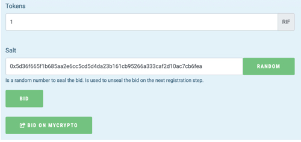
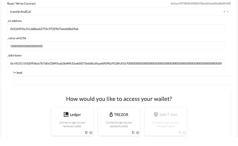
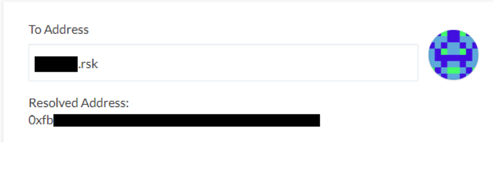

IOVLabs에서는 새로운 버전의RNS 매니저를 사용하여 사용자가 등록 및 네임 관리와 같은 작업을 위해MyCrypto 에 연결할 수 있다는 것을 알려드리게 되어 매우 기쁩니다.
MyCrypto는 월렛 생성, RRC-20 토큰 작업 및 더 손쉬운 블록체인과의 작용을 위한 오픈 소스 클라이언트 사이드 도구를 선도하는 도구 중 하나입니다. MyCrypto에서 자신의 도메인을 등록하려면 간단하게 도메인 상태를 확인한 뒤 지침을 따르면 됩니다. 등록 과정과 각 네임 액션 중에는 RNS 컨트랙트 작용에 사인하는 MyCrypto 체크아웃 옵션이 보입니다.


이 새로운 통합은 ‘.rsk’ 주소를 사용해 RIF 네임 서비스를 지원하는 첫 번째 통합 월렛인 MyCrypto와 RNS 간의 긴밀한 관계를 다시 한 번 보여줍니다!

RIF 서비스의 주요 목표는 블록체인 기술을 모두가 사용할 수 있게 하여 이러한 기술의 사용을 용이하게 하는 것입니다. RIF 네임 서비스는 특히 사용자 친화적으로 설계되었습니다. 이러한 MyCrypto와의 통합은 이러한 방향으로 가는 중요한 성과 중 하나입니다.